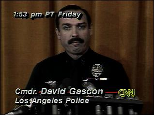
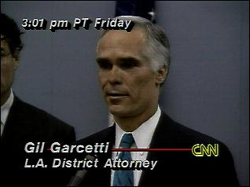
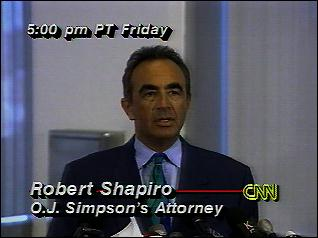
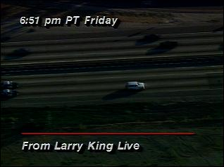
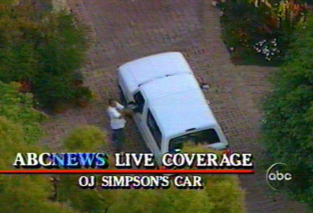

Orenthal James "O.J." Simpson was born on July 9, 1947 at Stanford University Hospital in San Francisco. At the age of 2, he contracted rickets and was forced to wear home-made
braces on his legs until age 5. O.J. joined the Persian Warriors gang in 1960 and was briefly incarcerated at the San Francisco Youth Guidance Center in 1962. Following this brief stint
in the correctional system, O.J. enrolled at City College in San Franciso and played football for them from 1965 to 1966. Due to his prowess, he was named to the Junior College All American
team which helped him earn an athletic scholarship to University of Southern California in 1967.
Adult Life - First Marriage (1967-1979)
Much has been forgotten about O.J.'s much less infamous first marriage to Marguerite Whitley. The couple met at Galileo High School and began dating in 1965 and, once Marguerite turned
18 in 1967, they married. O.J.'s football career was just beginning to take off, and during their marriage they spent the majority of their time in Amherst, New York while he
played for the Buffalo Bills. They had three children over the course of their 11 year marriage, one of whom tragically died in a drowning accident in 1979. By 1977 there was trouble in paradise,
and O.J.'s celebrity status was taking its toll on the marriage. It was during this tumultuous time that O.J. met Nicole Brown, who was working as a waitress in Los Angeles. O.J. and Marguerite
separated in 1978 and were divorced by 1979.
Adult Life - Second Marriage (1985-1992)
Nicole Brown was only 18 when she met O.J. in that Los Angeles restaurant, and despite the large age difference between the two, they married in 1985 and began reproducing almost immediately.
The death of O.J.'s father, Jimmie Lee Simpson, in 1986 was bookended on each side by the birth of his two children; a daughter in 1985 and a son in 1988. While nobody can exactly say what
went on behind closed doors in the Simpson household, what is known is that by January 1989 Nicole had ample reason to fear for her life. O.J.'s violent behavior led to a spousal abuse conviction
where he was required to pay fines and make a charitable donation to a battered women's program, in addition to a 120-hour community service requirement. It seems that this did little good, however,
as the couple were divorced by October 1992.
The Murder - June 1994
On June 12, 1994, Nicole Brown Simpson and her friend Ron Goldman were brutally stabbed in Nicole's home. Ron, who was both Nicole's friend and a local waiter, was visiting the home to return
a pair of sunglasses that Nicole's mother left at the restaurant where he worked. He left for Nicole's at about 9:50 pm and this was the last time either Ron or Nicole were known to be alive. We do know that Ron
made it to the Simpson house, because at 12:10am on June 13th, 1994, Nicole's dog led neighbors to the murder scene. Within the week, the LAPD begins their investigation into their now prime suspect; Orenthal
James Simpson.
The Victims - Nicole Brown Simpson & Ronald Lyle Goldman
Nicole Brown was born in May 1959 in Frankfurt, West Germany to Juditha Anne and Louis Hezekiel Brown. Her mother was German and her father American, and by the time Nicole reached high school
the family had relocated to California. In 1977, when Nicole was 18, she was introduced to O.J. Simpson while working as a waitress in an L.A. nightclub called the Daisy. The couple began dating,
despite the fact that O.J. was still legally married to his first wife, Marguerite. While he and Marguerite divorced in 1979, his marital status seemed unimportant to Nicole as their relationship
culminated in marriage in early 1985. Sadly, the couple were unable to reconcile their differences and Nicole filed for divorce in February 1992. Friends claimed the couple were "dramatic" and
"mutually obsessed" during both their relationship and subsequent marriage, so it seemed that the divorce was for the best.
Below you'll find a clip of a 911 call made by Nicole Brown Simpson made not long before her untimely death. Her fear is laid bare in her frantic tone and shaking voice.
Although they were divorced, the couple still had to care for their 2 young children. O.J. and Nicole attempted to reconcile with one another, but were ultimately unable to come to any kind of middle ground.
It was during this tumultuous time that Nicole was brutally murdered in her own home along with her friend, Ron Goldman. The pair were found by Nicole's neighbor at around 12 midnight on the morning of June 13th, 1994.
The Simpson children, aged 8 and 6, were asleep in the house at the time the murder occurred.
Ronald Lyle Goldman was born in July 1968 in Buffalo Grove, Illinois to Sharon Rufo and Fred Goldman. Ron attended Adlai E. Stevenson High School in Lincolnshire, Illinois before enrolling at Illinois State University
for one semester. His family, father Fred and younger sister Kim, had moved to Southern California and he joined them in 1985. In California, Ron worked various waiter jobs in addition to occasional modeling work.
He first became acquainted with Nicole Brown Simpson a mere 6 weeks before he was killed in her Brentwood home. The pair had a platonic friendship and met for coffee, dinner, and dancing several times during their
short friendship.
While their friendship may have been a healthy one, it was nevertheless still the cause of Ron's death. He was killed on the walkway headed into the Simpson home and police believe that he arrived after Nicole had
already been murdered, making him collateral damage. An eyewitness heard a man shouting that night, and it is believed that this was Ron attempting to help Nicole or call attention to the gruesom scene.
Ron's name was often overlooked during the initial trial in 1995, but in 1997 his family was awarded $19.5 million in damages during a civil wrongful death trial against O.J. Simpson. Then, in 2007, his family
was also awarded the proceeds, exclusive rights, and copyright of Simpson's book If I Did It. This enabled them to rebrand and redistribute the novel as If I Did It: Cofessions of the Killer, essentially
ensuring Simpson would never be able to profit from the book.
The Arrest - June 1994
Not even a full week after the deaths of Nicole Simpson and Ron Goldman, the LAPD's investigation into their prime suspect was well underway. On the afternoon
of June 17th, the LAPD confirmed that they were "actively searching" for Simpson and had been unable to locate him. About an hour later, the LA District Attorney
Gil Garcetti released a statement admonishing anyone who tried to hide Simpson. He gravely warns that it is a "felony" and advises the public not to forget that fact.
The police and DA, unable to get any response, reached out to Simpson's lead attorney - Robert Shapiro. At around 5 pm on June 17th, Shapiro also appeared on-screen. He
plead with Simpson to turn himself in, and reminded him to think of his small children. Approximately an hour and 45 minutes later police spotted a white Ford Bronco known
to belong to O.J.'s close friend, Al "A.C." Cowlings, was spotted on an expressway. A.C. eventually called the police himself and warned that the police should back off.
He said that Simpson was in the car with him, but he was armed.
O.J. Simpson finally surrendered to police at 8:51pm on June 17, 1994 following an almost 2-hour-long, 60-mile, low-speed police pursuit. This chase ended at his personal
residence, and while nothing extremely dangerous actually happened during the whole ordeal, it was nationally televised and became something of a media frenzy. This was only the beginning,
however, of the fiasco that was about to unfold in the courtroom.

LAPD Announcement (1994)

Gil Garcetti, LA District Attorney (1994)

Robert Shapiro, Attorney (1994)

A.C. Cowlings, Getaway Driver (1994)

Police Dispatch - Car Description (1994)
The Trial - January-October 1995
The trial itself ran from January 1995 to September 1995, and the final verdict was read on October 3rd, 1995. Below are links to the official courtroom transcripts for the
entirety of the trial.
On October 2nd, 1995, the jury read their verdict in this case. They found Simpson not guilty on both counts of murder, and this sent shockwaves through the American media as well as
internationally. The Washington Post even went so far as to release a special edition sold mere hours after the verdict was read. The year-long media frenzy that comprised this trial
is somewhat lost on us today, you need only look back at the stories from October 1995 to realize the public shock resulting from the verdict.